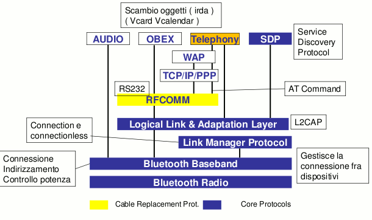
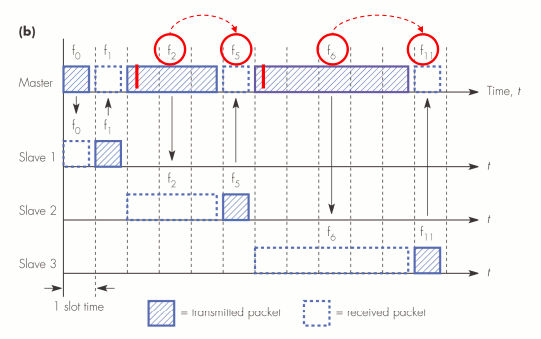
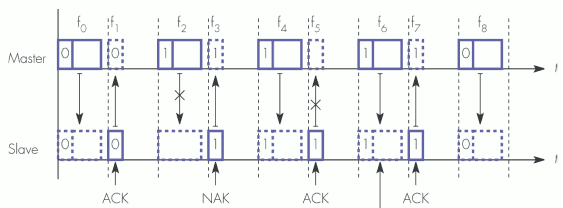
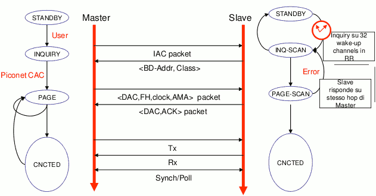
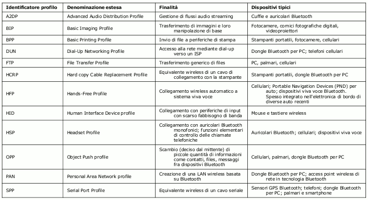
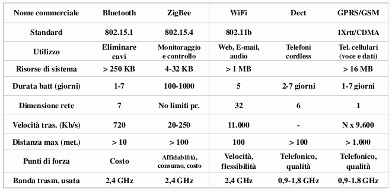

Torna alla pagina di Reti wireless
:: Reti wireless - Bluetooth ::
Appunti del 23-27 Aprile
Le immagini di questa pagina sono prese dalle slide del prof Rapacioli
Introduzione
Il Bluetooth è una specifica per reti personali wireless (WPAN), pensata per consumare e costare poco. L'idea originaria è partita da Ericsson nel 1994, a cui si sono aggregati nel tempo un bel numero di società (IBM, Intel, Nokia, Toshiba, ... oggi sono circa 2500) che nel 1998 hanno fondato il Bluetooth Special Interest Group (SIG). Insieme al gruppo è arrivata anche la standardizzazione da parte della IEEE, che certifica il protocollo come 802.15.1 .
Nota di folklore: il nome arriva dal re danese Harald Blåtand, dove Blåtand significa "dente blu" (blue tooth, anglofonicamente parlando). Perché proprio lui? Perché così come il buon Harald riuscì a unificare Danimarca e Norvegia sotto il suo regno (cosa non banale, dato il carattere dei vichinghi), così lo standard Bluetooth riesce a far comunicare dispositivi completamente diversi. Wow, già.
Altra nota di folklore: il logo del protocollo è la sovrapposizione delle rune nordiche che compongono le iniziali di Harald Blåtand. Magnifico.

Le caratteristiche tecniche del Bluetooth e la sua semplicità di configurazione lo rendono particolarmente adatto per essere implementato su oggetti di uso quotidiano che non richiedono grandi competenze tecniche. L'utilizzo classico è "auricolare-cellulare", ma come ben sappiamo viene utilizzato per collegare un gran numero di oggetti, dai palmari alle stampanti, dalle fotocamere ai gamepad della Play Station (anche se la gente per bene preferisce il Bluetooth dei WiiMote). Semplicità d'uso significa che il riconoscimento e il collegamento deve essere triviale, quasi automatico.
Concludiamo l'introduzione con le solite beghe di utilizzo del marchio. Chiunque voglia vendere il proprio dispositivo Bluetooth col suo bel logo sopra, deve registrarsi presso il SIG, compilare una serie di moduli che spieghino cos'è e cosa fa il suo prodotto, pagare circa 1000$ (cifra non monumentale) e ottenere il suo identificativo univoco di 48 bit. Che ce ne facciamo? Tante cose che vedremo man mano.
Ovviamente nessuno può impedirmi di creare una radio Bluetooth e usarla su un mio dispositivo, ma se non la certifico non posso venderla come Bluetooth.
Torna su
Caratteristiche e versioni
Come già anticipato, il Bluetooth è stato progettato per reti WPAN, quindi con un corto raggio di azione, e per avere una buona autonomia (da 1 a 7 giorni). Le due cose sono strettamente collegate tra loro dal momento che l'area di copertura dipende dalla potenza in uscita dell'antenna, e che all'aumentare di questa aumentano anche i consumi energetici. In base alla potenza dell'antenna possiamo distinguere tre classi di dispositivi: classe 1 (100mW -> copertura: 100m), classe 2 (2,5mW -> copertura: 10m), classe 3 (1mW -> copertura: meno di un metro).
Lo standard Bluetooth prevede la trasmissione di onde radio nella banda di frequenze ISM (Industrial Scientific Medical, riservata ad impieghi civili), ovvero 2.4 GHz. In particolare essa utilizza 83.5 MHz di questa banda, che divide in 79 canali (vedremo poi perché). Si noti che essendo basato su onde radio non richiede puntamento diretto tra dispositivi, limite di cui invece soffriva l'IrDA.
Lo standard Bluetooth si è molto evoluto nel tempo, portando correzioni e migliorie nelle varie versioni di rilascio. Le principali innovazioni riguardano la sicurezza (nelle prime versioni ci voleva poco per fregare i dati altrui), la velocità di trasmissione (dal limite di 720 Kb/s ora si può arrivare a 3 Mb/s), migliorie nella comunicazione (maggiore qualità, minori consumi) ed altro ancora. Il 21 aprile 2010 il SIG ha completato la stesura delle specifiche per il core della versione 4.0, ma per il rilascio completo si parla di fine anno/inizio 2011 (http://www.bluetooth.com/English/PRESS/Pages/NewsDetail.aspx?ID=186).
Torna su
Piconet
Un gruppo di dispositivi collegati tra loro in Bluetooth formano una rete chiamata piconet, in cui si possono distinguere un master (unico) e più slave. Il master non si limita a creare la piconet e darle un nome, ma gestisce l'allocazione dei canali, le comunicazioni, la sincronizzazione del clock con gli altri partecipanti e la sequenza dei salti di frequenza (tutte cose che vedremo poi). Quando un nuovo dispositivo entra nella piconet il master gli chiede come si chiama e cosa sa fare (=che protocolli supporta), così da capire in che "lingua" dovrà parlare con lui. Questa attività riassumibile con "ci conosciamo e capiamo cosa possiamo fare" si chiama discovery. Si noti che due slave non possono comunicare direttamente tra loro, ma devono sempre passare dal master come intermediario, a meno che non siano ancora nella fase di discovery.
Le topologie di rete sono di tre tipi: punto a punto (1 master 1 slave), punto a multipunto (1 master + slave), scatternet (più piconet collegate tra loro). Nel caso delle scatternet c'è uno slave che fa da ponte tra due piconet, quindi parteciperà contemporaneamente ad entrambe. Pur essendo assolutamente previste, pochi sviluppatori investono tempo nel progettare soluzioni di questo tipo, perché poco utili nella pratica e altamente incasinate da implementare.
Una piconet supporta al massimo 8 dispositivi, di cui uno è il master. Ovviamente stiamo parlando di quelli connessi al master della mia piconet, o in luoghi affollati come aeroporti o aule gremite non si riuscirebbe mai ad unirsi ad una. A questo proposito vale la pena distinguere tre tipi di slave:
- active slave, che partecipano attivamente alla piconet sia in ricezione che in trasmissione, e sono sincronizzati col master. Possono essere massimo 7;
- standby slave, non connesso e quindi non coinvolto nelle attività della piconet. Si dice anche che sono in modalità risparmio energetico, e possono essere un numero indefinito;
- parked slave, che sono attivi ma non stanno comunicando. Sonnecchiano consumando poco e rimanendo sincronizzati alla piconet ascoltando su 32 canali invece dei 79. In questo modo si riesce ad avere più di 7 dispositivi agganciati al master, anche se il numero di quelli che possono trasmettere rimane invariato.
Il master continua a switchare tra i dispositivi della piconet secondo una strategia round-robin. La modalità broadcast per comunicazioni simultanee con più nodi è prevista e possibile (facendo time-division multiplexing), ma non è troppo utilizzata.
Torna su
Frequency hop
Il Bluetooth usa la tecnica del frequency hop (salto di frequenza) per aumentare la larghezza di banda del segnale e renderla più immune alle interferenze. Essa consiste nel cambiamento a intervalli regolari della frequenza di trasmissione, secondo una sequenza pseudocasuale prestabilita. Ecco spiegato il motivo per cui il Bluetooth si riservava 79MHz: assegnando un canale ad ogni MHz di frequenza ottiene 79 canali tra cui fare frequency hopping.
Ogni chip Bluetooth ha associato un identificativo univoco sulla faccia della terra (grazie alla lungimirante e lucrosa gestione del SIG), che ogni potenziale master può usare come seme di un algoritmo per la generazione pseudocasuale di una sequenza di frequenze. Una piconet è quindi formata da slave in accordo col master sulla sequenza da lui comunicata, così anche se continuano a parlarsi su frequenze diverse si trovano sempre. Considerando che in un secondo di trasmissione dati si hanno 1600 salti (diventano 3200 nelle fasi di inquiry e paging), va da sé che la sincronizzazione è fondamentale: se ci disaccoppiamo di 0.625 microsecondi (un time slot) non ci becchiamo più.
La probabilità che la sequenza di una piconet coincida in qualche istante con quella di un'altra è normalmente molto bassa. Le probabilità di collisioni aumentano all'aumentare di piconet e dispositivi ad esse connessi, da cui i limiti fissati dal protocollo.
Torna su
Stack Bluetooth

- Bluetooth Radio, è lo strato fisico che definisce i requisiti della parte in radio frequenza (classi di dispositivi, potenza dell'antenna, frequenze utilizzate, ...);
- Bluetooth Baseband, che abilita il collegamento fisico tra dispositivi all'interno di una piconet. Tra gli altri aspetti di cui si occupa vi sono la gestione di: clock, formato dei pacchetti dati, ruoli master/slave, controllo dei collegamenti e delle trasmissioni audio, correzione degli errori;
- Link Manager Protocol (LMP), responsabile dell'inizializzazione configurazione e autenticazione del collegamento. Si occupa inoltre di controllare i diversi stati dei dispositivi (attivi/standby/parked/..) all'interno della piconet;
- Logical Link & Adaptation Layer (L2CAP), si trova allo stesso livello dell'LMP ma usa le sue direttive per stabilire il link. Tra gli altri compiti esegue il multiplexing dei protocolli di livello superiore, la segmentazione e il riassemblaggio dei pacchetti;
- RFCOMM, è il protocollo che emula una porta seriale RS-232 sull'L2CAP (in realtà ne emula 60), permettendo così che il Bluetooth supporti tutte quei protocolli che usano meccanismi di trasmissione seriale (OBEX, TCP/IP/PPP, WAP). Per questo motivo viene chiamato "sostitutivo del cavo";
- Service Discovery Protocol (SDP), elemento fondamentale poiché permette ai dispositivi di comunicare i protocolli da loro supportati, dunque i servizi che offrono/richiedono. Si noti che la discovery dei servizi parte subito dopo l'autenticazione tra dispositivi, ovvero dopo la discovery tra i nodi;
- Telephony, ovvero protocolli telefonici. Ad essi si riconducono gli AT-Command, comandi standard pensati per la gestione dei modem, e quindi per la gestione di una connessione di tipo telefonico attraverso comandi seriali. Permettono ad esempio di aprire o chiudere connessioni audio, alzare o abbassare il volume, ...;
- Audio, che codifica il segnale audio ed è interfacciato direttamente col livello Baseband. E' una delle ragioni di successo del Bluetooth: l'audio si sente bene e funziona benone.
I primi tre layer (Bluetooth Radio, Bluetooth Baseband, LMP) possono essere considerati come la parte firmware dello stack, perché associati al componente hardware che fa la trasmissione radio; sono chiamati anche controller. Al di sopra di essi si collocano i protocolli software, nel loro insieme individuati come host, poiché legati all'ambiente in cui la radio opera. In figura non si vede (potete vederlo qui ), ma tra queste due sezioni si colloca l' Host to Controller Interface (HCI), che è opzionale e come il nome stesso suggerisce fa da interfaccia comune ad entrambi.
Torna su
Tipi di traffico
Come facilmente intuibile dal paragrafo precedente, il Bluetooth gestisce sostanzialmente due tipi di traffico:
- traffico audio, che è simmetrico (ho due canali, uno di ingresso e uno di uscita), sincrono e orientato alla connessione (SCO, Synchronous Connection-Oriented link). Orientato alla connessione significa che apre un canale tra master e slave e lo tiene aperto per tutto il tempo della comunicazione; è una scelta sensata dal momento che sta trattando un flusso audio continuo. Non c'è controllo dell'errore, quindi nessuna ritrasmissione dei pacchetti corrotti o non ricevuti (se capisci capisci, se no pazienza). Un master può supportare al massimo tre canali audio attivi contemporaneamente (per limiti di banda), su cui trasmette a 64 Kb/s per slot;
- traffico dati, che utilizza gli slot lasciati liberi da quello audio, e che è asincrono e non orientato alla connessione (ACL, Asynchronous Connectionless Link). Può essere sia simmetrico che asimmetrico e prevede la correzione degli errori con ritrasmissione dei pacchetti. Lo slave può trasmettere solo se nello slot precedente aveva ricevuto un pacchetto dal master.
Torna su
Trasmissione dei pacchetti
L'unità di misura della trasmissione dati Bluetooth è il pacchetto, che può estendersi per 1, 3 o 5 time slots consecutivi. Come è strutturato un pacchetto lo vedremo qualche paragrafo più avanti, per il momento ci basta sapere che è formato da un header con tutte le informazioni del caso e da un payload. Introduciamo alcune caratteristiche del processo di trasmissione a partire da questa immagine:

Considerazioni:
- i 625 microsecondi di un time slot non sono tutti utilizzati, ma c'è una guard time di silenzio (220microsecondi) che evita che i pacchetti si sovrappongano;
- gli indici dei time slot (f0, f1, f2, ...) hanno valori pseudocasuali, ovviamente non sono sequenziali (o l'utilità del frequency hopping andrebbe a ramengo);
- la trasmissione può avvenire solo tra master e slave e tra slave e master (a meno che due slave non siano in fase di discovery);
- master e slave trasmettono a turni, secondo una tecnica di Time Division Duplex (TDD);
- se il pacchetto da trasmettere è lungo più di un time slot, sarà trasmesso sempre alla stessa frequenza. La risposta però non avverrà sulla frequenza successiva a quella di trasmissione, ma a quella a cui si sarebbe dovuti arrivare se avessimo avuto tutti pacchetti da 1. Guardando l'immagine in alto si capisce meglio: in f2 si trasmette un pacchetto che occupa tre time slot, ma la frequenza di risposta usata non è f3, bensì f5 (f2+3).
Torna su
Correzione degli errori
Nel paragrafo precedente abbiamo dato per scontato che le comunicazioni vadano sempre a buon fine, cosa ovviamente poco realistica. Il meccanismo che implementa il Bluetooth per la correzione degli errori è l'invio di pacchetti di acknowledgement (ACK) o not-acknowledgement (NACK) a seconda che la trasmissione del pacchetto sia andata o meno a buon fine. Si tratta di un sistema semplice ma estremamente funzionale, utilizzato dalla totalità dei protocolli wireless e da molti di tipo wired.
Anche in questo caso illustreremo il funzionamento a partire da una figura:

Tre osservazioni iniziali:
- ad ogni pacchetto è associato un bit chiamato sequence number (SEQN), un booleano che vale alternativamente 0 e 1 a seconda del valore dell'ultimo pacchetto inviato correttamente;
- l'ACK (o il NACK) è inviato nel time slot immediatamente successivo a quello di ricezione, mai alla stessa frequenza. Inoltre non è un segnale generico, ma dipende dal contenuto del pacchetto perché mi indica il SEQN di quello a cui si riferisce;
- la comunicazione può fallire in entrambe le direzioni di trasmissione: dal master allo slave (mancato ricevimento del pacchetto) o dallo slave al master (mancato ricevimento dell'ACK)
Torniamo alla figura. Nei primi due time slot il master invia un pacchetto con sequence number pari a 0 allo slave (in f0) e questi gli risponde correttamente con un ACK (in f1) che arriva a destinazione. Nessun errore, niente correzioni necessarie, tutti felici. Il sequence number viene portato a 1.
In f2 il master manda un nuovo pacchetto, che però non arriva correttamente allo slave; ad esempio ha un CRC sbagliato, non è arrivato prima del timeout, mancano porzioni nell'header, eccetera. In f3 lo slave manda allora un pacchetto NACK per segnalare la trasmissione fallita, indicando anche il SEQN del pacchetto che non ha ricevuto, ovvero l'1, così che il master sappia quale dovrà ritrasmettere.
In f4 il master re-invia il pacchetto con sequence number pari a 1 che stavolta arriva in modo corretto. In f5 lo slave invia l'ACK, ma in questo caso è la sua trasmissione a fallire, ad esempio perché c'è stata una collisione con un altro dispositivo che trasmetteva in quel momento alla stessa frequenza di f5. Il master che si aspettava un ACK in quel time slot, non avendolo ricevuto manda per l'ennesima volta il pacchetto con SEQN=1 in f6 perché il ciclo non si è ancora chiuso. Stavolta va tutto bene: l'ACK è spedito e ricevuto in f7 e il sequence number viene riportato a 0. Tutto qui.
Ora possiamo capire più facilmente perché la correzione degli errori si fa solo su comunicazioni asincrone e non anche sul flusso voce: continue interruzioni dovute alle ritrasmissioni dei pacchetti corrotti si avvertirebbero e renderebbero la conversazione fastidiosa, mentre su traffico dati sono praticamente impercettibili.
Torna su
Stati e connessione
In generale i dispositivi Bluetooth possono essere nei tre stati principali che abbiamo già visto, ovvero standby, connected (o attivi) e parked. Esistono poi una serie di sottostati da cui bisogna passare per stabilire una connessione e abilitare i dispositivi alla fase di discovery. Il passaggio tra questi sottostati avviene attraverso comandi che partono dal link manager LMP o da segnali interni del link controller (ad esempio segnali di timeout).
Vediamo ora come avviene la connessione tra due dispositivi Bluetooth:

La procedura di inquiry permette al potenziale master di fare la discovery dei dispositivi a portata di antenna, o viceversa al potenziale slave di essere rilevato. L'intera operazione avviene sullo strato fisico dello stack, con la formazione di una canale fisico temporaneo il cui frequency hopping è limitato a 32 sole frequenze (distribuite equamente sui 79 MHz totali) dette di wake-up. Se un nodo in standby riceve un pacchetto di inquiry IAC su tali frequenze, si sente interrogato dall'ambiente e deve decidere se partecipare o meno alla piconet. Se sì, si passa allo procedura di paging, in cui lo slave viene interrogato sui servizi (profili) di cui dispone e invitato a partecipare alla piconet instaurando una connessione grazie alle informazioni inviate dal master (la sequenza di hopping, la sincronizzazione col clock, il suo indirizzo nella piconet, ...). Il canale fisico messo a disposizione per la procedura di paging è specifico per la coppia di dispositivi protagonisti, e se questa va a buon fine entrano finalmente in modalità connected.
Torna su
Pacchetti
Un generico pacchetto Bluetooth è formato da tre parti:
- Access Code (AC), usato per l'identificazione della piconet e la sincronizzazione delle trasmissioni. Si noti che gli slave non accettano pacchetti con AC che non corrispondono all'identità del loro master. Esistono tre tipi di Access Code, a seconda delle modalità in cui può essere il dispositivo: Channel Access Code (CAC, che identifica la piconet), Device Access Code (DAC, usato in fase di paging per la creazione di una nuova connessione) e Inquiry Access Code (IAC, da usare nella procedura di inquiry). Può essere lungo 72bit o 68bit a seconda che sia seguito da un header o sia trasmesso da solo;
- header, lungo 18bit e a sua volta suddiviso in sei parti: AM_ADDR (indirizzo temporaneo assegnato ad un dispositivo nella piconet), TYPE (il codice di 4 bit che identifica il tipo di pacchetto, ad esempio audio o dati), FLOW (per il controllo del flusso in una comunicazione audio), ARQN (per l'ACK/NACK), SEQN (il sequence number già visto) e l'HEC (per il controllo dell'integrità dell'header);
- payload, il contenuto vero e proprio della trasmissione. Può essere lungo da 0 a 2745bit e può essere o dati o voce.
Torna su
Sicurezza e pairing
Con il rilascio delle nuove versioni del Bluetooth si è sempre tenuto un occhio di riguardo per la sicurezza del protocollo, correggendo le varie falle man mano che si scoprivano e introducendo strategie più sicure per l'autenticazione e la trasmissione dei dati.
Il pairing è un meccanismo che realizza il duplice obiettivo di controllare quali dispositivi possono connettersi al mio, e stabilire automaticamente delle connessioni con quelli considerati sicuri (trusted) quando arrivano a portata di antenna. Ciò è implementato attraverso lo scambio di una chiave segreta condivisa (l'operazione è effettuata in genere direttamente dall'utente), che può essere ulteriormente raffinato introducendo diversi livelli di crittazione (ad esempio dell'identità dell'altro, dei certificati scambiati o dell'intero traffico). I motivi dietro questi raffinamenti, introdotti dalla versione 2.1 del Bluetooth, erano che con un semplice scambio chiavi in chiaro (generalmente di 4 cifre) si è particolarmente esposti ad attacchi brute-force, e il fatto che le piconet abbiano un'estensione ridotta non è una buon motivo per stare tranquilli dato che eventuali attaccanti potrebbero munirsi di antenne bibliche per intercettare gli scambi.
Gli algoritmi di pairing, crittazione e gestione delle chiavi sfruttano 4 parametri: device address (l'id univoco del dispositivo, pubblico), chiave segreta di autenticazione, chiave privata segreta (il numero che si scambiano master e slave), numero pseudocasuale.
Il livello di sicurezza può essere settato lato utente. In particolare, tutti gli apparati Bluetooth permettono di configurare almeno 4 opzioni che rispondono alle seguenti domande:
- voglio essere interrogato? Se sì, rimango in ascolto sui famosi 32 canali di wake-up e nel caso mi aggrego a una piconet, altrimenti mi faccio i fatti miei
- voglio interrogare?
- voglio fare pairing?
- il pairing deve essere permanente o temporaneo? Ad esempio, se devo farlo con un mio amico a cui devo passare una foto non ha senso farlo permanente, mentre ne ha se voglio collegare la mia auricolare al cellulare
Torna su
Profili
Le possibili applicazioni per il Bluetooth sono numerose, e ancora più numerosi sono i profili definiti per identificarle. Ecco un tabellone con qualche esempio:

Il fatto di avere tanti profili ha dei pro e dei contro: se ne definisco pochissimi poi ci saranno problemi di compatibilità perché sarà demandata a livello applicativo (e nessuno si vuole prendere la briga di assicurarla), mentre se ne definisco troppi sono pesantemente vincolato in quello che posso fargli fare. E' la solita coperta troppo corta.
Ipse dixit:
"E poi diciamolo, la maggior parte si differenzia per cazzate”.
Torna su
Comparative

Concludiamo facendo notare che tra i tanti criteri in base ai quali scelgo i protocolli wireless da utilizzare per le mie soluzioni, non è affatto da trascurare la grandezza dei loro stack. Essa è infatti direttamente collegata alle risorse che richiede al sistema, non solo come peso sulla memoria ma anche sulla capacità di elaborazione del microprocessore integrato. Ad esempio, i device su cui gira lo Zigbee non supporterebbero neanche per scherzo la trasmissione via TCP/IP (dove infilerebbero il suo monumentale stack nei miseri 32Kb a disposizione?). Altro esempio, non posso pensare di mettere un processore a 32bit in un'auricolare per fargli fare autonomamente VoIP, a meno che non voglia attaccare un calcolatore all'orecchio degli utenti.
Torna su
Torna alla pagina di Reti wireless